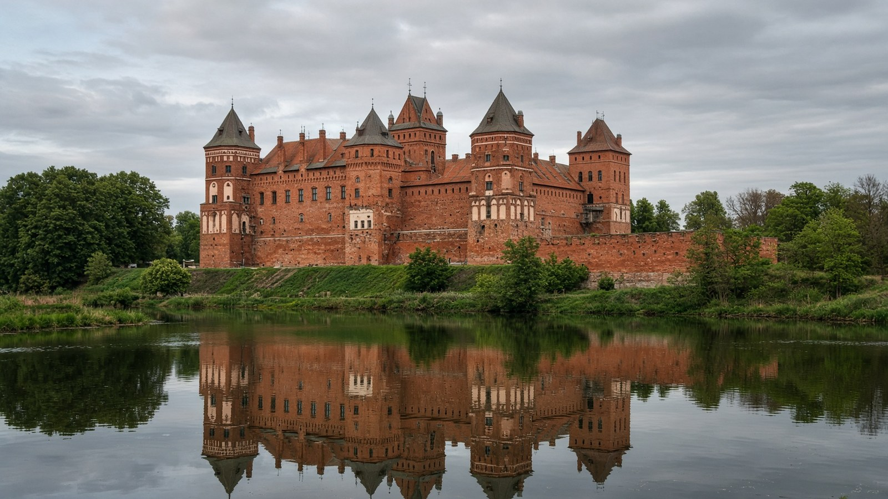

أوروبا
بيلاروس
Belarus
سهول وغايات شرق أوروبا.
- العاصمة
- مينسك
- نظام الحكم
- جمهورية
- التأسيس / الاستقلال
- 25 أغسطس 1991
- النوع
- جمهورية
منذ التأسيس
استقلت بيلاروس في 25 أغسطس 1991. جمهورية عاصمتها مينسك.
معالم
- معمارقلعة مير
حصن من اليونسكو.
- طبيعةغابة بيالوفييجا
بيسون أوروبا.
- معلممينسك
ساحة الاستقلال.